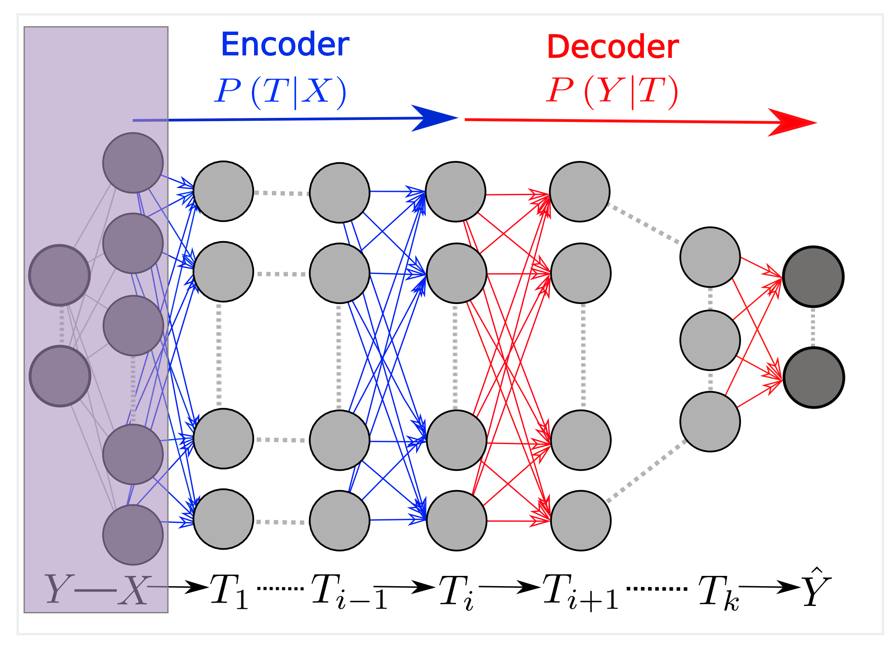
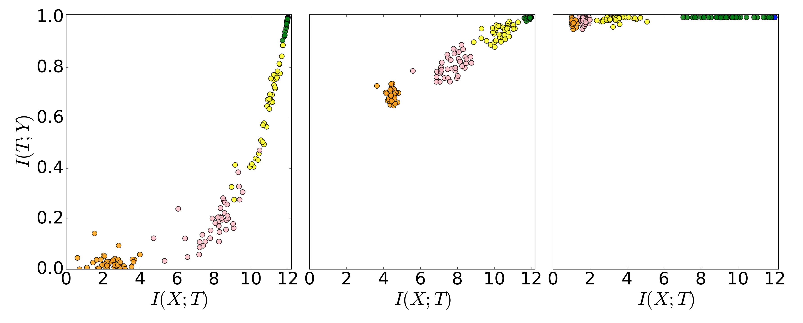

IB and
Deep Learning
From theory to neural networks and back
Albert No · Yonsei University
Information Theory · 2026
Contents
DNN as Markov Chain
Each layer processes, each layer loses
Why IT for Deep Learning?
Information theory offers tools that classical learning theory lacks:
- DPI: fundamental limits on what any representation can achieve
- MI: a single quantity that measures both compression and prediction
- Variational bounds: tractable surrogates for intractable MI (BA, DV, NWJ from Lectures MI-1,2)
The IB gives a principled objective: minimize loss while compressing the representation.
Classical IT asks: how many bits to describe data?
IB asks: which bits matter?
Layer Representations
An $L$-layer network: input $X$ to output $\hat Y$ through hidden layers $T_1, \dots, T_L$.

Each $T_l = f_l(T_{l-1})$ is deterministic: the chain $Y - X - T_1 - \cdots - T_L$ is Markov.
DPI for Every Layer
Recall (DPI). $Y - X - T$ Markov $\implies$ $I(T;Y) \le I(X;Y)$.
Applied layer-by-layer:
Deeper layers can only lose information about $Y$.
A good network sheds $X$, keeps $Y$: minimal loss of $I(T;Y)$.
Layers in the Information Plane
Each layer $l$ maps to a point $(I(X;T_l),\; I(T_l;Y))$.
DPI constrains both coordinates monotonically:
Layers trace a path from upper-right to lower-left in the plane.
An ideal network: layers hug the IB curve, shedding $I(X;T)$ without losing $I(T;Y)$.
Information Plane Hypothesis
Does training drive compression?
The Hypothesis
Conjecture (Shwartz-Ziv and Tishby, 2017).
SGD training moves through two phases in the information plane:
Phase 1 — fitting: $I(T_l;Y)$ rises (learn the task).
Phase 2 — compression: $I(X;T_l)$ falls (drop irrelevant detail).
Fit first (↑ up), then compress (← left).
The Fitting Phase
Early epochs:
- Large gradients, rapid weight change
- $I(T_l;Y)$ ↑ for all layers: learns to predict
- $I(X;T_l)$ ↑ too: more informative about $X$
Both coordinates move up and right. Short phase (~hundreds of iterations).
The Compression Phase
Later epochs:
- Gradients shrink, SGD noise dominates
- $I(T_l;Y) \approx$ constant: prediction stable
- $I(X;T_l)$ falls: forget irrelevant input
Layers drift left, toward the IB curve.
Claim: SGD noise regularizes, driving layers to the IB-optimal tradeoff.
The Information Plane in Training

Each dot = one layer at one epoch. Up first (fit), then left (compress).
Watch: Optimization in the Plane
Why Compression Might Help
Why compressed representations generalize better:
- Low $I(X;T)$: fewer bits to memorize
- High $I(T;Y)$: remaining bits predict the target
The IB curve is the Pareto frontier: off-curve wastes bits or loses prediction.
Generalization bound (informal), $S$ = data, $W$ = weights:
Variational Information Bottleneck
Making the IB objective tractable for neural networks
The Tractability Problem
$\min I(X;T) - \beta\, I(T;Y)$ needs two MI terms. For continuous $T$, both intractable:
- $I(X;T)$: needs the marginal $p(t) = \mathbb{E}_{p(x)}[p(t|x)]$
- $I(T;Y)$: needs the posterior $p(y|t)$
Fix: variational bounds on each term (from Lectures MI-1, Diff-1).
Upper Bound on $I(X;T)$
Lemma (Rate Upper Bound).
For any distribution $r(t)$:
Equality iff $r(t) = p(t)$.
Proof. $\;\mathbb{E}_{p(x)}[D_{\mathrm{KL}}(p(t|x)\| r(t))] - I(X;T) = D_{\mathrm{KL}}(p(t)\| r(t)) \ge 0. \;\square$
Choose $r(t) = \mathcal{N}(0, I)$: the bound becomes a closed-form KL.
Lower Bound on $I(T;Y)$
Recall (Barber-Agakov, Lecture MI-1). $I(T;Y) \ge \mathbb{E}_{p(t,y)}[\log q(y|t)] + H(Y).$
For any variational decoder $q_\psi(y|t)$:
Equality iff $q_\psi = p(y|t)$. For classification, $q_\psi = \mathrm{Cat}(\mathrm{softmax}(W_\psi t))$:
The bound is the negative cross-entropy loss.
VIB Objective
Definition (Variational Information Bottleneck, Alemi et al., 2017).
Combining both bounds, the VIB objective is:
Maximize over encoder $\phi$ and decoder $\psi$.
VIB Architecture
Instantiate with Gaussian encoder $p_\phi(t|x) = \mathcal{N}(\mu_\phi(x),\, \sigma^2_\phi(x)\,I)$ and prior $r(t) = \mathcal{N}(0, I)$:
where $t_i = \mu_\phi(x_i) + \sigma_\phi(x_i) \odot \varepsilon$, $\;\varepsilon \sim \mathcal{N}(0,I)$ (reparameterization trick).
A VAE encoder + KL-to-prior, trained end-to-end by SGD.
Connection to the VAE
Recall (VAE loss, Lecture Diff-1). $\mathcal{L}_{\mathrm{VAE}} = \mathbb{E}[\log f_\theta(x|z)] - D_{\mathrm{KL}}(g_\phi(z|x)\| f(z)).$
| VAE | VIB | |
|---|---|---|
| First term | $\log f_\theta(x|z)$ (reconstruction) | $\log q_\psi(y|t)$ (prediction) |
| KL term | $D_{\mathrm{KL}}(g_\phi \| f)$ | $\beta\, D_{\mathrm{KL}}(p_\phi \| r)$ |
| Goal | Reconstruct $X$ | Predict $Y$ |
VIB = VAE with a classifier decoder instead of a reconstruction decoder. Same architecture, different objective.
What $\beta$ Controls
- $\beta = 0$: plain cross-entropy, no compression
- Small $\beta$: mild compression
- Large $\beta$: heavy compression, $T \to$ prior $\mathcal{N}(0,I)$
Empirically (Alemi et al.):
- Moderate $\beta$ → adversarial robustness
- Better under distribution shift
- Too large $\beta$ → accuracy drops (over-compression)
The Debate
Does compression really happen in deep networks?
The Estimation Problem
For deterministic layers $T_l = f_l(T_{l-1})$ with continuous input:
Differential entropy $H(T_l)$ of a deterministic function can be infinite (or undefined).
Shwartz-Ziv & Tishby used binning to estimate $I(X;T_l)$: discretize $T_l$ into bins, compute discrete MI.
Binning introduces a resolution parameter. The observed compression may reflect the binning, not the network.
Activation Function Dependence
Key Finding (Saxe et al., 2019).
The compression phase depends on the activation function:
tanh: compression observed (saturating nonlinearity clusters activations).
ReLU: no clear compression phase.
Why? tanh saturates → clusters inputs (discretizes); ReLU preserves structure.
Compression may be an artifact of saturation, not a law of training.
What Does Not Survive
- Universal two-phase claim: compression is not a general property of DNN training with SGD
- SGD noise as the driver: compression occurs with full-batch gradient descent for tanh networks too
- Binned MI as a diagnostic: the value depends on bin size, making comparisons fragile
The specific mechanism (SGD noise → compression) does not hold in general.
What Survives
- Information plane as diagnostic: useful even if values are approximate
- VIB objective: well-motivated, controls the rate-relevance tradeoff
- Geometric compression: representations cluster by class
- MI generalization bounds: valid, if loose
The IB principle holds. Debate: does training solve IB implicitly, or must we (VIB) do it explicitly?
IT Implications for Deep Learning
The IB framework yields concrete insights:
- Generalization $\leftrightarrow$ compression: $I(S;W)$ bounds the gap
- Representation quality: the IB curve is the Pareto frontier
- Regularization = rate control: dropout, weight decay, noise all cut $I(X;T)$
- Sufficient statistics: $\beta\to\infty$ gives minimal sufficient $T$; feature selection $\equiv$ compression
The IB Arc
This two-lecture series connects five information-theoretic tools:
| Tool | From lecture | Role in IB |
|---|---|---|
| MI | Entropy (Lec 2) | Both terms in the Lagrangian |
| DPI | Entropy (Lec 2) | Constrains the information plane |
| R(D) | Lossy (Lec 1) | IB = R(D) with log-loss |
| BA bound | MI (Lec 1) | Lower bound on relevance in VIB |
| ELBO/VAE | Diffusion (Lec 1) | VIB = VAE with classifier decoder |
Summary
- DNN layers form a Markov chain; DPI constrains the information plane.
- Fitting-then-compressing: real for saturating activations, not universal.
- Variational IB: tractable IB = VAE with a classifier decoder.
- The IB principle is a valid lens, implicit or explicit.
Thank you.